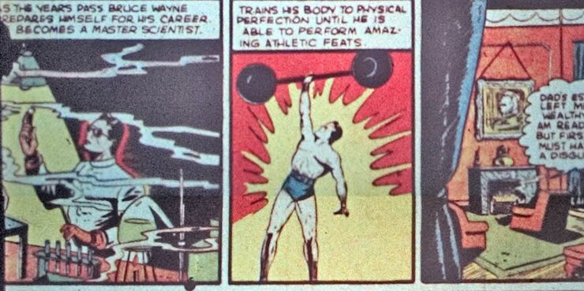
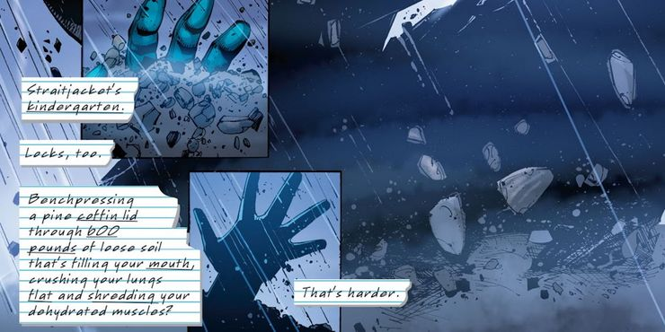
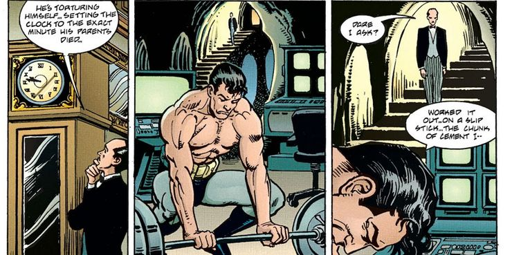
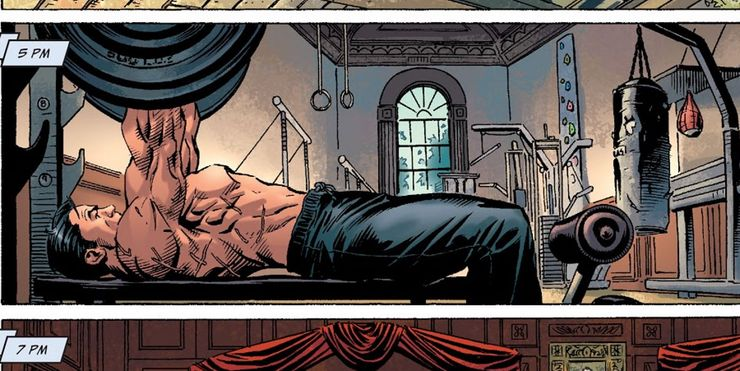

How Much Weight Can Batman Actually Lift?
Batman trained his body to peak human condition, but how much can he actually lift? Different comics offer some shocking records for Bruce Wayne.

Everyone knows that Batman is capable of tremendous feats of strength. Since losing his parents to a mugger, Bruce Wayne trained his body to reach its absolute maximum potential – and often pushes it beyond those limits every night. But just how powerful did Bruce Wayne manage to make himself? Interestingly enough, the limits to Batman’s strength have changed over time. While many agree that Bruce Wayne has “peak human strength,” exactly what the human body is capable of bench pressing and enduring changes constantly as new world records are set. Thus, some can argue that Batman’s limits are constantly rewritten as humans push past their own limits.
Nevertheless, they are several stories that focus on Bruce Wayne’s physical capabilities and showcase a man who – if not superpowered – is pretty much on the edge of what should be considered superhuman. In Detective Comics #33, artist Bob Kane drew a panel showing Bruce hefting a giant strongman’s dumbbell with one arm, seemingly without any effort. Writer Bill Finger wrote in the caption that Bruce “trains his body to physical perfection until he is able to perform amazing athletic feats.”
Just how much Bruce was lifting in that panel is unspecified, but over the years, readers would see Batman perform many of his “amazing athletic feats.” He can control his own body temperature to the point where he can stand in sub-zero water unaffected. He can sense sniper bullets coming at him and somehow react with enough speed to dodge them. He can even find the stamina to fight multiple opponents for hours on end without collapsing. Of course, being able to do all of this means Batman needs to obey a strict exercise regimen – and several comics have shown just what Bruce Wayne puts himself through just to keep his body such a finely honed weapon. In Batman #655, Bruce is shown to be bench pressing over 1000 pounds during one of his regular workouts. In Batman Odyssey #2, Bruce mentions that his maximum leg press is 2500 pounds. As a comparison, the world’s current weightlifting champion, Georgian heavyweight Lasha Talakhadze, has been known to lift 1067 pounds between the snatch and clean and jerk.Still, it’s one thing to be able to bench press a lot of weight in the gym – quite another to use that strength in the field. Bruce regularly shows he can focus that raw strength to perform some frightening displays of power every night. Batman has lifted giant beams weighing around 800 to 1000 pounds (or more) without any extra help. He’s also lifted giants like Solomon Grundy (who must weigh well over 500 pounds) with a single arm.
Perhaps Batman’s most impressive feats, however, are accomplished when he’s not operating at his peak. In Batman #681, Bruce hadn’t slept properly for days and had a cocktail of drugs and Joker’s Venom coursing through his system. Despite this, he was able to bench press a coffin lid through 600 pounds of soil after being literally buried alive. Other instances have shown him in similar “bad shape,” yet still capable of breaking a metal pipe in half with his remaining strength. It should also be noted that in addition to constantly maintaining his muscles, Bruce is a master of body control and regularly encounters stressful situations that generate massive surges of adrenaline in normal people. Thus, he can push his body past even his “normal” limits which should, frankly, put him in a superhuman category on a semi-regular basis.
Even so, Batman has shown he sometimes finds himself frustrated by his own human limitations. In the storyline “Venom” which ran from Batman: Legends of the Dark Knight #16-20, Bruce finds himself unable to lift a chunk of cement preventing him from saving a little girl from drowning. The girl dies and Bruce begins forcing himself to lift heavier weights to build up his strength. Perhaps Batman’s most impressive feats, however, are accomplished when he’s not operating at his peak. In Batman #681, Bruce hadn’t slept properly for days and had a cocktail of drugs and Joker’s Venom coursing through his system. Despite this, he was able to bench press a coffin lid through 600 pounds of soil after being literally buried alive. Other instances have shown him in similar “bad shape,” yet still capable of breaking a metal pipe in half with his remaining strength. It should also be noted that in addition to constantly maintaining his muscles, Bruce is a master of body control and regularly encounters stressful situations that generate massive surges of adrenaline in normal people. Thus, he can push his body past even his “normal” limits which should, frankly, put him in a superhuman category on a semi-regular basis
And ultimately, this is where Batman is at his most powerful – not with just his body or with his mind, but the optimal combination of both. Bruce has gained genuine superpowers in multiple adventures, occasionally even becoming as strong as Superman. Yet in many of these instances, he finds it much easier to lose control and abuse the extra power by going after criminals with a brutality that frightens even him. As Batman once admitted privately to Commissioner Gordon, he enjoys hurting criminals. Despite how unnerving this sounds, Bruce’s awareness of his own capacity for violence also lets him keep his brutality in check. Limiting his power to (somewhat) less-than-superhuman levels and allowing himself to be challenged by a world full of superhuman opponents may actually help Batman keep himself under control. So, while there may be instances where Bruce Wayne wears a suit of strength-enhancing armor, in most instances he’ll just use his own muscles. And that’s often more than enough.
Tranding
Card title
Some quick example text to build on the card title and make up the bulk of the card's content.
Go somewhere